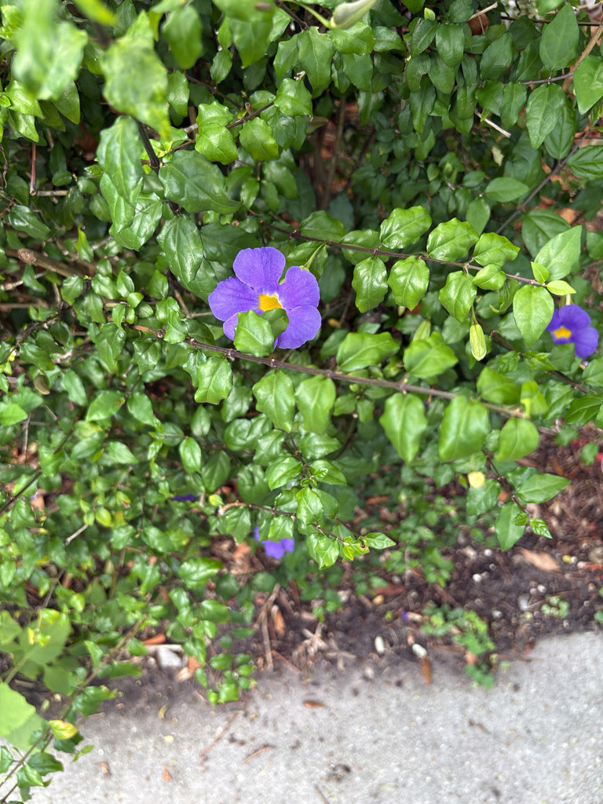

- Despite the name, this is not a climbing vine — it is a shrub. Most of its hundred-odd Thunbergia relatives are vigorous climbers. King's Mantle stayed low and bushy, which is why it is manageable in a garden setting where the climbing species are not.
- Deep purple flowers with a yellow throat, produced nearly continuously in warm conditions. One of the more reliable year-round bloomers in South Florida.
- Native to tropical West Africa. Member of Acanthaceae — the acanthus family.
- The common name honors its regal flower color. The genus name honors Carl Peter Thunberg, an 18th-century Swedish botanist who studied under Linnaeus and documented plants across Japan, South Africa, and Sri Lanka.
Non-native. Native to tropical West Africa. Member of Acanthaceae — the acanthus family. Named for Carl Peter Thunberg, a student of Linnaeus who documented plants across three continents in the 18th century.
- King's Mantle is the well-behaved member of a mostly unruly genus. Most of the roughly 100 Thunbergia species are vigorous twining vines — the Black-eyed Susan Vine and the Bengal Clock Vine (also called Sky Vine) are relatives that will cover a fence or climb a tree if given the opportunity.
- King's Mantle stayed compact and shrubby, which makes it useful in a garden context where the climbing relatives are not.
- The deep purple flowers with a contrasting yellow throat are produced nearly continuously through warm weather, making it one of the more reliable year-round flowering shrubs for Central and South Florida. The flower color is genuine — a saturated purple that holds up in full sun without fading to a washed-out lavender.
- The genus honors Carl Peter Thunberg, a Swedish botanist who studied under Linnaeus and conducted fieldwork in Japan, South Africa, and Sri Lanka in the 1770s and 1780s. His Flora Japonica (1784) was the first systematic treatment of Japanese plants by a European botanist.
The tubular flowers attract butterflies and hummingbirds. The long bloom season and consistent flower production make it a reliable nectar source through the warm months.
Limited beyond pollinator value — not a significant fruit or seed source for wildlife. Its primary role is as a nectar plant and ornamental anchor in a mixed shrub planting.
Deep purple with a pale yellow throat, funnel-shaped, about 2 inches across. Produced singly at leaf axils in near-continuous succession through warm weather. The color is distinctive — genuine purple, not blue or lavender.
Small capsules. Not ornamentally significant.
Opposite, ovate to heart-shaped, medium green, with slightly wavy margins.
Evergreen shrub, typically 4 to 6 feet tall and 5 to 8 feet wide. Mounding, spreading habit. Does not climb.
The deep purple flowers with yellow throats produced continuously along the branches are the year-round identification feature. The shrubby (non-climbing) habit distinguishes it from most other Thunbergia species.
This is grown purely as an ornamental and isn't eaten. No significant toxicity to people or dogs is documented.
Easy to walk right past. King's Mantle blooms quietly beside the Queen's Wreath, a taller, lusher vine that dominates the space and pulls the eye upward — so here, at least, the Queen rather outshines the King. Look low and close to the shrub's deep purple flowers and you will find it holding its own.

- © Randall Carter (CC-BY-NC), via iNaturalist